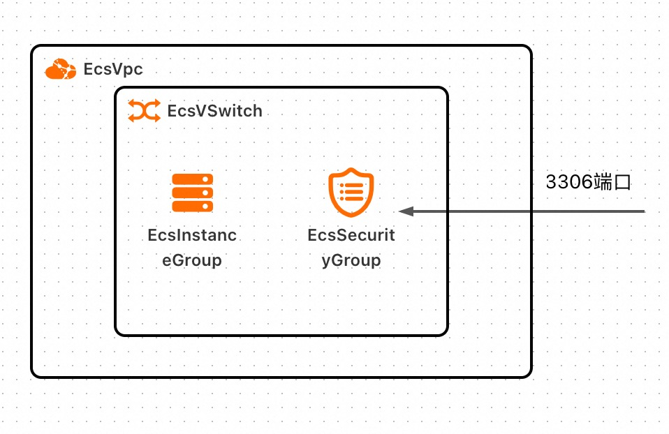

服务模板说明文档
服务说明
本文介绍基于MySQL软件包快速构建托管版单租户计算巢服务，关于计算巢托管版可以参考帮助文档， 本示例采用单ECS的架构，并默认开启了VPC对等连接，用户部署服务实例后，可以直接通过内网访问部署在服务商的MySQL，除此之外还配置了三种套餐，分别为：
| 套餐名 | ECS规格族 | vCPU与内存 | 系统盘 | 公网带宽 |
|---|---|---|---|---|
| 低配版 | ecs.c6.large | 内存型c6，2vCPU 4GiB | ESSD云盘 200GiB PL0 | 固定带宽1Mbps |
| 基础版 | ecs.c6.xlarge | 内存型c6，4vCPU 8GiB | ESSD云盘 200GiB PL0 | 固定带宽1Mbps |
| 高配版 | ecs.c6.2xlarge | 内存型c6，4vCPU 8GiB | ESSD云盘 200GiB PL0 | 固定带宽1Mbps |
本示例对应的Git仓库地址：mysql-managed-vpcpeering-demo
本示例会自动的构建计算巢服务，具体的服务构建流程为:
- 将MySQL安装包（提前存放到该github repo中）构建为计算巢文件部署物
- 创建计算巢服务并关联文件部署物
创建过程大约持续3分钟，当服务变成待提交后构建成功。
部署架构
本部署仅有一台ECS，安全组开放3306端口，每个服务实例将新建Vpc与Vswitch。

服务构建计费说明
测试本服务构建无需任何费用，创建服务实例涉及的费用参考服务实例计费说明。
RAM账号所需权限
本服务需要对ECS、VPC等资源进行访问和创建操作，若您使用RAM用户创建服务实例，需要在创建服务实例前，对使用的RAM用户的账号添加相应资源的权限。添加RAM权限的详细操作，请参见为RAM用户授权 。所需权限如下表所示。
| 权限策略名称 | 备注 |
|---|---|
| AliyunECSFullAccess | 管理云服务器服务（ECS）的权限 |
| AliyunVPCFullAccess | 管理专有网络（VPC）的权限 |
| AliyunROSFullAccess | 管理资源编排服务（ROS）的权限 |
| AliyunComputeNestUserFullAccess | 管理计算巢服务（ComputeNest）的用户侧权限 |
| AliyunComputeNestSupplierFullAccess | 管理计算巢服务（ComputeNest）的服务商侧权限 |
| AliyunCDTFullAccess | 管理云数据传输（CDT）的权限 |
服务实例计费说明
测试本服务在计算巢上的费用主要涉及：
- 所选vCPU与内存规格
- 系统盘类型及容量
- 公网带宽
计费方式包括：
- 按量付费（小时）
- 包年包月
目前提供如下套餐：
| 套餐名 | ECS规格族 | vCPU与内存 | 系统盘 | 公网带宽 |
|---|---|---|---|---|
| 低配版 | ecs.c6.large | 内存型c6，2vCPU 4GiB | ESSD云盘 200GiB PL0 | 固定带宽1Mbps |
| 基础版 | ecs.c6.xlarge | 内存型c6，4vCPU 8GiB | ESSD云盘 200GiB PL0 | 固定带宽1Mbps |
| 高配版 | ecs.c6.2xlarge | 内存型c6，4vCPU 8GiB | ESSD云盘 200GiB PL0 | 固定带宽1Mbps |
预估费用在创建实例时可实时看到。
部署流程
部署参数说明
| 参数族 | 参数项 | 说明 |
|---|---|---|
| 基础配置 | 数据库root和admin账户密码 | 数据库root和admin账户密码，长度8-32个字符，可包含大小字母、数字及特殊符号（包含：!@#$%^&*-+=_）。 |
| 网络配置 | 可用区 | 选择可用区，资源将在服务商的该可用区创建。 |
| 网络设置 | 专有网络IPv4网段 | 填写专有网络IPv4网段，建议您使用RFC私网地址作为专有网络的网段如10.0.0.0/8，172.16.0.0/12，192.168.0.0/16。 |
| 网络设置 | 交换机子网网段 | 填写交换机子网网段。 |
部署步骤
- 部署链接

- 单击部署链接，进入服务实例部署界面，根据界面提示，填写参数完成部署。
 网络配置部分填入新建VPC的IPV4网段与交换机子网网段。
如果需要创建对等连接，这里还需要填写网络配置，网络设置部分填写对等连接的用户侧VPC。
需要注意VPC的网段不可以与新建VPC网段重叠。
网络配置部分填入新建VPC的IPV4网段与交换机子网网段。
如果需要创建对等连接，这里还需要填写网络配置，网络设置部分填写对等连接的用户侧VPC。
需要注意VPC的网段不可以与新建VPC网段重叠。

- 参数填写完成后可进入订单确认页。

- 确认订单完成后同意服务协议并点击立即创建
进入部署阶段。

 4. 等待部署完成后就可以开始使用服务。
4. 等待部署完成后就可以开始使用服务。
 网络配置已有对等连接内容（用户在创建服务实例页选择开启VPC对等连接才会显示）。
网络配置已有对等连接内容（用户在创建服务实例页选择开启VPC对等连接才会显示）。
 5. 使用服务，本服务支持VPC对等连接，租户可以通过VPC对等连接实现私网访问，租户私网访问流程：
1. 在服务实例详情 - 立即使用，可以看到私网IP地址，连接时可以通过IP地址进行访问
5. 使用服务，本服务支持VPC对等连接，租户可以通过VPC对等连接实现私网访问，租户私网访问流程：
1. 在服务实例详情 - 立即使用，可以看到私网IP地址，连接时可以通过IP地址进行访问
 2. 在对应的vsw中创建ECS，创建好后安装mysql客户端
2. 在对应的vsw中创建ECS，创建好后安装mysql客户端
yum install mysql
or
apt install mysql-client
3. 在该ECS中连接MySQL，用IP进行连接：

服务详细说明
本文提前将MySQL社区版安装包存放到该Github Repo中，构建服务过程中会将该安装包发布为计算巢部署物，并在ROS模板写入安装指令，ROS模板引擎在执行时便会自动执行安装了。
wget '{{ computenest::file::MySQL }}' -O mysql-community-release-el6-5.noarch.rpm
rpm -ivh mysql-community-release-el6-5.noarch.rpm
yum repolist all | grep mysql
yum install mysql-community-server -y
{{ computenest::file::MySQL }} 为占位符，会由计算巢服务替换成文件部署物MySQL的http下载地址
文件说明
| 文件路径 | 说明 |
|---|---|
| config.yaml | 构建服务的配置文件，服务构建过程中会使用计算巢命令行工具computenest-cli，computenest-cli会基于该配置文件构建服务 |
| parameters.yaml | 本服务为托管版单租，使用该文件渲染服务商需要配置的网络参数，包括VpcId，VSwitch等 |
| artifact/mysql-community-release-el6-5.noarch.rpm | MySQL社区版安装包，构建过程会将该包发布为计算巢部署物 |
| icons/service_logo.jpg | 构建服务默认的图标 |
| templates/parameters.yaml | 本服务为托管版单租服务，所以只需要用户填写一部分参数，通过该文件指定用户所填参数 |
| templates/template.yaml | ROS模板文件，ROS模板引擎根据该模板能够自动创建出所有的资源 |
templates/template.yaml主要由三部分组成
- Parameters定义需要用户填写的参数，包括付费类型，实例规格，Ipv4网段，交换机子网网段和实例密码可用区参数
ZoneId:
Type: String
AssociationProperty: ALIYUN::ECS::Instance:ZoneId
Label:
en: VSwitch Available Zone
zh-cn: 可用区
# 数据库root账户密码
Password:
# 查询该参数时只输出星号（*）
NoEcho: true
Type: String
Description:
en: 'Database root account passwor, 8-32 characters, including uppercase and lowercase letters, numbers and special symbols (including: !@#$%^&*-+=_).'
zh-cn: 数据库root账户密码，长度8-32个字符，可包含大小字母、数字及特殊符号（包含：!@#$%^&*-+=_）。
Label:
en: Root Account Password
zh-cn: 数据库root账户密码
ConstraintDescription:
en: '8-32 characters, including uppercase and lowercase letters, numbers and special symbols (including: !@#$%^&*-+=_).'
zh-cn: 8-32个字符，可包含大小字母、数字及特殊符号（包含：!@#$%^&*-+=_）。
MinLength: '8'
MaxLength: '32'
AssociationProperty: ALIYUN::ECS::Instance::Password
# 新建Ipv4网段
VpcCidrBlock:
Type: String
Label:
en: VPC CIDR IPv4 Block
zh-cn: 专有网络IPv4网段
Description:
zh-cn: VPC的ip地址段范围，<br>您可以使用以下的ip地址段或其子网:<br><font color='green'>[10.0.0.0/8]</font><br><font
color='green'>[172.16.0.0/12]</font><br><font color='green'>[192.168.0.0/16]</font>
en: 'The ip address range of the VPC in the CidrBlock form; <br>You can use
the following ip address ranges and their subnets: <br><font color=''green''>[10.0.0.0/8]</font><br><font
color=''green''>[172.16.0.0/12]</font><br><font color=''green''>[192.168.0.0/16]</font>'
AssociationProperty: ALIYUN::VPC::VPC::CidrBlock
Default: 192.168.0.0/16
# 新建交换机网段
VSwitchCidrBlock:
Type: String
Label:
en: VSwitch CIDR Block
zh-cn: 交换机子网网段
Description:
zh-cn: 必须属于VPC的子网段。
en: Must belong to the subnet segment of VPC.
AssociationProperty: ALIYUN::VPC::VSwitch::CidrBlock
AssociationPropertyMetadata:
VpcCidrBlock: VpcCidrBlock
Default: 192.168.1.0/24
# Ecs实例类型
EcsInstanceType:
Type: String
Label:
en: Instance Type
zh-cn: Ecs实例类型
AssociationProperty: ALIYUN::ECS::Instance::InstanceType
AllowedValues:
- ecs.c6.large
- ecs.c6.xlarge
- ecs.c6.2xlarge
- ecs.c6.4xlarge
- Resources定义需要开的资源，包括新建的Vpc、VSwitch、ECS。
# Vpc
EcsVpc:
Type: ALIYUN::ECS::VPC
Properties:
CidrBlock:
Ref: VpcCidrBlock
VpcName:
Ref: ALIYUN::StackName
# 交换机
EcsVSwitch:
Type: ALIYUN::ECS::VSwitch
Properties:
ZoneId:
Ref: ZoneId
VpcId:
Ref: EcsVpc
CidrBlock:
Ref: VSwitchCidrBlock
EcsSecurityGroup:
Type: 'ALIYUN::ECS::SecurityGroup'
Properties:
VpcId:
Ref: VpcId
SecurityGroupIngress:
- Priority: 1
PortRange: 3306/3306
NicType: internet
SourceCidrIp: 0.0.0.0/0
IpProtocol: tcp
# Ecs实例
EcsInstanceGroup:
Type: ALIYUN::ECS::InstanceGroup
Properties:
# I/O优化实例
IoOptimized: optimized
ZoneId:
Ref: ZoneId
DiskMappings:
- Category: cloud_essd
Device: /dev/xvdb
Size: 200
SystemDiskSize: 40
# cloud-init执行用户命令
# /var/log/cloud-init.log /var/log/cloud-init-output.log 可以看到执行日志
# /var/lib/cloud/instance/scripts/part-001 为具体的脚本 可以sh 执行来排查问题
UserData:
Fn::Sub:
- |
#!/bin/sh
# sleep一段时间确保网络就绪
sleep 10
# 以下省略，具体可以看templates/template.yaml
# 付费方式：按量付费
InstanceChargeType: PostPaid
MaxAmount: 1
# 系统盘类型：cloud_essd
SystemDiskCategory: cloud_essd
# 实例名称
InstanceName:
Ref: ALIYUN::StackName
VpcId:
Ref: VpcId
SecurityGroupId:
Ref: EcsSecurityGroup
VSwitchId:
Ref: VSwitchId
# 指定CentOS 7.9镜像，如果修改镜像，UserData脚本需要进行适配
ImageId: "centos_7_9_x64_20G_alibase_20220727.vhd"
InstanceType:
Ref: EcsInstanceType
# 主机名
HostName:
Ref: ALIYUN::StackName
# Ecs登录密码
Password:
Ref: Password
# 是否为实例分配公网IP
AllocatePublicIP: true
InternetMaxBandwidthOut: 1
- Outputs定义需要最终在计算巢概览页中对用户展示的输出
Outputs:
MysqlUserName:
Label: MySQL登录用户名
Value: admin
VisitUrl:
Label: 私网访问地址
Description:
zh-cn: 私网访问地址
en: private Addresses
Value:
Fn::Sub:
- mysql://${ServerAddress}:3306
- ServerAddress:
Fn::Select:
- 0
- Fn::GetAtt:
- EcsInstanceGroup
- PrivateIps